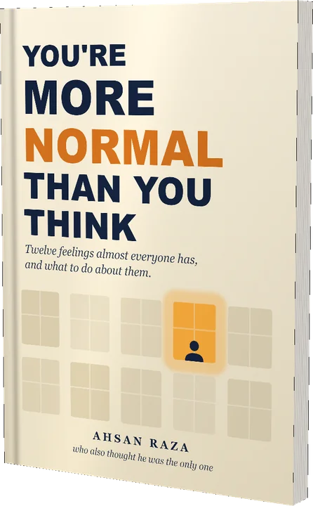
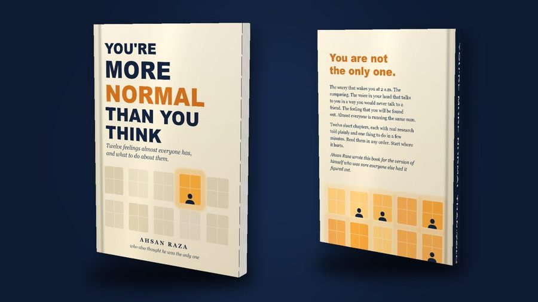

A self-help book by Ahsan Raza
You’re more normal than you think.
Twelve feelings almost everyone has, and what to do about them.
The worry at 2 a.m. The comparing. The harsh voice in your head. Each chapter ends with something you can do in a few minutes.
Instant download. EPUB and PDF, with a free printable workbook.
Or read the start for free ↓
Sound familiar?
Ever feel like you’re the only one?
The worry that wakes you at 2 a.m.
The comparing.
The harsh voice in your head.
The feeling that you’ll be found out.
Almost everyone is running the same sum.This book shows you the sum, and what to do next.
How it works
Every chapter does the same five things
A real moment
A scene you will recognise.
A plain truth
What is actually going on.
What the research says
Real studies, told plainly.
A Do this
It takes a few minutes.
A Carry this
Four lines to take into the evening.
Free sample
Read the start for free
The introduction and all of Chapter 1. Read it here, or take it with you.
No sign-up. No checkout.
Introduction
Read this first
When I was young, I was sure I wasn’t normal.
I didn’t mean it as a boast. It felt more like a diagnosis. Other people seemed to get through their days in some ordinary way, and I seemed to be running a different, stranger machine. What I went through, how I handled my feelings, how I reacted to things: nobody else did that. So I couldn’t ask for help, because I couldn’t think how to explain it. Who would understand a problem that only one person had?
That belief shaped years of my life.
It was wrong. It took me a long time, and a lot of it badly, to find out how wrong. The worry that wakes you at 2 a.m. The comparing. The voice in your head that talks to you in a way you would never talk to a friend. The feeling that you’ll be found out. The shame about crying, or about needing anyone. I have lived every one of those, all twelve that are in this book. Life made me go through them. Maybe part of the point was to make me understand them well enough to write them down, so you don’t have to go through them alone and in the dark.
I should be honest about the bottom of it. For a long time nothing helped. I came out of those years completely broken. I questioned my own existence, the purpose of it, life itself. The one thing that kept me going, and that finally made the difference, was a plain discovery: I was just like you. Almost everyone. The people who looked fine were running the same sum I was.
What helped me were the people who had been around me all this time. I just never wanted to ask for help. Friends, family, even strangers made it possible for me to be where I am today.
So I went looking for what other people had been through, and what they had done about it. I went through the studies, the real ones, not the slogans, to find what holds up and what doesn’t. This book is what I found, put in the order I wish I’d been given it.
The word that matters most in this book is normal.
I wrote it for people who are trying to get through a Tuesday, keep their promises, not snap at someone they love over the washing up, and feel all right about themselves by the time the lights go off. The younger me, the younger you, and the older you too.
It’s also for you if you keep things to yourself. If you read more than you talk. If you’ve wanted to say how you really feel and haven’t found anyone you trust enough to say it to. Think of these pages as that conversation, with one difference. The friend speaking is the clearest-headed version of you, not tired or comparing, the one who already knows most of this and only needs it said out loud.
How to use this book
Every chapter has a real moment, a plain truth, what the research says, and a Do this that takes a few minutes. Each one has a Carry this: four lines to take with you into the evening.
Try the Do this each time. The longer writing pages live in the Practice section at the back, after Read This When, one page for each chapter. They have blank lines on purpose. Write on them, bend the corners, come back on the bad days.
After the Practice section come the Back Pages, with three lists: a Proof list, a Worry log, and What I already know. The chapters send you there one line at a time. Reading an ebook? Make one note on your phone called “Back Pages” with those three headings.
You don’t have to read it in order. Start where it hurts.
For the heavy nights
Some nights are heavier than usual. That says nothing bad about you, and a few small things can lower the weight before morning.
Breathe in through your nose, then take a second short sip of air on top. Let it out slowly through your mouth. Do that for up to five minutes, and stop and breathe normally if you feel dizzy. A long out-breath helps the body settle.
Look for five things you can see, four you can touch, three you can hear. Say them out loud if you can.
Drink a glass of water. Eat something, even toast. Turn a light on. Put your shoes on and stand at an open door or window for two minutes.
Then write one sentence to tomorrow’s you: “Last night was hard. You got through it.” Leave it where you’ll see it. Your Proof list at the back is the place for it.
Don’t decide anything big tonight. Heavy nights end.
One promise: nothing in here asks you to become someone else.
Ahsan Raza
Chapter 1
Why It’s Normal to Feel Not Normal
“I am a man, and feel for all mankind.”
Terence, The Self-Tormentor, Act 1, Scene 1 (translated by George Colman, 1768)
You know the feeling. Everyone else seems to have been handed the instructions, and you were out of the room when they went round. Other people look calmer and further along, and you’re the one keeping up appearances. It turns up in a crowded room, or at 1 a.m. when you should be asleep and are reading the reviews of a toaster you don’t need, and it rarely has a reason you could point to.
You’re at a family dinner, or the office on a Monday. Someone asks how you are. “Good, busy,” you say, and you smile at about the right moment. On the drive home one thing you said comes back, and you replay it past the garage and the roundabout and most of the way down your own road, because you weren’t really there for any of it, you were doing an impression of yourself.
Later, in bed, a quiet question. What is wrong with me?
Probably nothing.
Two versions of you
Most of us live as two people. There’s the one people see: the reliable colleague, the son or daughter who never worries anyone, the friend who’s always up for it. And there’s the one who only comes out when the door’s shut, still in work clothes on the edge of the bed, scrolling without reading, a bit lost, sometimes sad without being able to say why.
The first version isn’t fake. It’s how anyone gets through the day. You can’t tell your manager, your in-laws and the man at the corner shop exactly how you feel every time they ask. Playing a role is partly good manners and partly survival. It starts early. Somewhere around the school gate you work out which bits of you get a smile, and you show more of those.
The trouble starts when the gap between the two gets wide. You spend so long being the one who’s fine that you start believing everyone else really is fine, and you’re the only one pretending. You’re holding your inside, all of it, the whole messy drawer, up against everyone else’s outside, which is all you ever get to see.
That comparison is never fair. You know about your 2 a.m. worries, the bill on the fridge, the thing you haven’t told anyone. You don’t know about theirs. So you lose. Every time.
Feeling not normal is about as normal as it gets. The people around you are doing the same comparison. They look across the table at your calm face, the one you put on in the car park, and some of them think you’ve got it all worked out.
Being ordinary is not a failure, or a consolation prize for missing out on brilliance. The tired person, the person who still hasn’t done what they planned at twenty: neither is a broken version of a human. Up close, that’s what humans look like.
So what counts as normal? More than you’ve been told.
Crying is normal, and not only at funerals. In the car, over an advert for building society loans. Asking for help is normal, even when you’re usually the one people ask. Feeling stuck for weeks is normal. So is losing interest in something you used to love and finding it again a year later at the back of a cupboard. Thinking the worst is normal too. Your mind is trying to get you ready for bad news before it arrives. It overdoes it, badly, but it means well.
None of this gets shared. Nobody posts “had a quiet cry in the car park, then bought bread.” It happens anyway, to people you know.
Why do we hide it? Mostly because we think we’d be the only one. If everyone else is fine, then showing you’re not feels like admitting there’s something wrong with you. So you keep it in, and because you keep it in, the next person thinks you’re fine as well, and on it goes, round the whole office, round the whole family, everyone protecting everyone else and getting lonelier doing it.
There’s a cost. Holding a role all day wears you out, and not only in the body. You can come home from a day where nothing went wrong, drop your keys in the bowl, and feel wrung out, because you spent eight hours being someone slightly to the left of who you are.
And the hiding takes the very thing you wanted. If nobody ever sees the second version, nobody can comfort it. The friend who would have said “me too” never gets the chance. So you go on believing you’re the only one, partly because you made sure nobody could tell you otherwise.
This doesn’t mean telling everyone everything. Some people haven’t earned your full story, and your cousin’s new boyfriend is one of them. But it helps to know which bits are the role and which bits are you, and to have one person, or even one page, where the second version is allowed out.
A book can be one of those places.
Everyone is doing the maths
None of this is a personal flaw. People are built this way.
When there’s no clear way to measure ourselves, we look at other people. The psychologist Leon Festinger set this out in 1954, in a paper called “A Theory of Social Comparison Processes” in the journal Human Relations. Am I doing all right? Further along than her, behind him? There isn’t a ruler for that, so we glance round the room.
So what are we glancing at? In 2012, Hui-Tzu Grace Chou and Nicholas Edge surveyed 425 university students and published the results in Cyberpsychology, Behavior, and Social Networking. The students who had used Facebook for longer, and spent more hours on it each week, were more likely to agree that other people were happier and had better lives than them. So were students whose friend lists included lots of people they didn’t know in real life. Online, people post the wedding and the new job. They don’t post the row in the car on the way to the wedding.
In 2011, a team led by Alexander Jordan, then at Stanford, published four studies in Personality and Social Psychology Bulletin with a title that does the work for you: “Misery Has More Company Than People Think.” People underestimated how often others feel bad. They saw their own negative feelings as more private than their good ones. And the people who underestimated other people’s bad feelings tended to feel lonelier and to brood more, while those who overestimated other people’s good times tended to be less satisfied with their own lives.
We compare, and we hold our full story up against other people’s edited one, and the people who underestimate everyone else’s bad days tend to feel lonelier. You aren’t the only one. Yours is just the only inside you can see.
So what do you do with this? Stopping comparing isn’t on the menu. People compare; it comes with having eyes. What you can do is make the comparison fair. Each time a post makes you feel behind, put back the bit it left out. And when you can, spend the time with people in person, where the cracks show and the dishes pile up in the sink like yours. You’ll try the first part in two minutes below.
Four people, one Tuesday
Priya sat in her car outside the school gate with the engine off. The other parents were already standing in their usual clumps, and one of the dads was doing an impression of somebody. She found a raisin in her hair from breakfast, picked it out, looked at it, and didn’t get out until the bell rang, so she could walk straight past them to the door without having to chat.
Tomas was at his brother’s flat for dinner. His brother had just been promoted, and their mother kept saying so, to the table and then to the neighbour who popped in to borrow a pan and stayed for twenty minutes. Tomas said “that’s brilliant, really” three times and once, by accident, “that’s really brilliant”. On the night bus home a man behind him was eating chips, and Tomas didn’t open the group chat when it buzzed.
Aiko worked the early shift at a pharmacy. At 6 a.m., counting the float into the till, she found a message from an old university friend. A photo of a new house, keys held up to the camera. She typed “so happy for you!!” and deleted it, then typed it again with one exclamation mark and sent it. A man was already tapping on the glass because his watch said six and the sign said six.
Kwame stood in the office kitchen while the kettle boiled. He’d just come out of a meeting where he’d nodded at everything and understood about half. A colleague came in, rinsed a mug, and said, “Did you follow any of that?” He opened his mouth. The water came to the boil. He said, “Mostly,” and she said, “Lucky you,” and went back to her desk. He dropped the tea bag, missed the bin, and had to pick it up off the lino.
Each of them went home that night thinking the others had it together.
Look at what nearly happened in that kitchen. Somebody asked the true question. If Kwame had said “Not really,” two people would have found out they weren’t the only one, right there by the sink, over a dripping tea bag. It’s that small, most of the time.
Now turn it round to you. Who in your life looks as if they’ve got it all figured out? And who would say “me too” if you gave them half a chance? Put a face to both.
Do something with that now, while it’s fresh. Feelings like this stay large while they live only in your head. Written down, they shrink to a few lines, and a pattern you can see on a page starts to look less like a flaw and more like a habit.
Pick up your phone first. If now isn’t the time, mark this page and come back.
Two minutes: one post, and what it leaves out
Do this now, 2 minutes. Set a timer for two minutes.
- Open the app you scroll most. Find a post from the person you thought of, or the first one that gives you that drop in your stomach. A holiday, a promotion, an engagement, a new flat. Take a screenshot.
- Open your notes app and write one line under today’s date: “What this doesn’t show:” Then finish it. A loan, a fight on the way there, the forty photos deleted before this one. You don’t have to know. Guess kindly.
- Say it to yourself, quietly: “I’m comparing my inside to their outside.”
Keep the screenshot for a week. Then delete it, and see if you can still remember why it bothered you.
Reading in print? Write the post and your “What this doesn’t show” line below.
Nobody’s asking you to cheer yourself up by imagining their life is secretly awful. Just make the comparison fair.
Carry this
- Tonight, tell one person one true thing about your day that the role usually covers.
- The line to remember: you’re comparing your inside to their outside.
- Write one thing that helped you, or one thing you got through, on the Proof list at the back.
- The full page for this, the roles you play and what helped last time, is in the Practice section at the back, under Chapter 1.
Somewhere today, someone looked at you and saw the calm version of you.
Next up
There’s a question this chapter left open. If nothing is actually wrong, why does your mind keep running the worst version anyway, the awkward thing you said, the message nobody has answered since Thursday?
That isn’t a fault in you either. Your worrying brain is doing a very old job, one that kept people alive long before there were offices or phones. Once you see what that job is, you can start working with it instead of against it. You don’t have to make it quieter. You have to check what it’s telling you.
Twelve feelings, twelve chapters
You don’t have to read it in order. Start where it hurts.
Beyond the chapters
The back of the book
A Practice section
A longer writing page for each chapter. Write on it, bend the corners, come back on the bad days.
A Read This When index
So on a bad night you can find the right page fast.
A free printable workbook
It comes with the book, as a fillable PDF.

For the bad night
Not sure where to start? Pick how you feel.
The back of the book has a Read This When index. Choose a moment and see where it sends you.
This is a taste of the index. The book has 23 entries in all.
You were never the only one.
- The book, 164 pages, as an EPUB and a PDF.
- The workbook, free, printable and fillable.
- Instant download, the moment you buy.